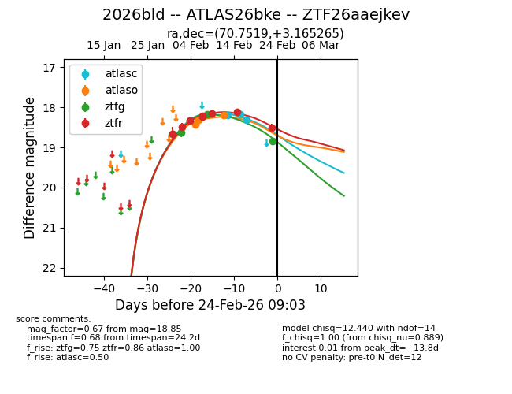
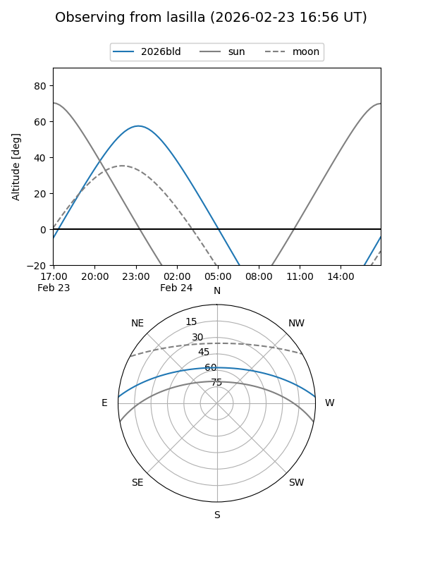
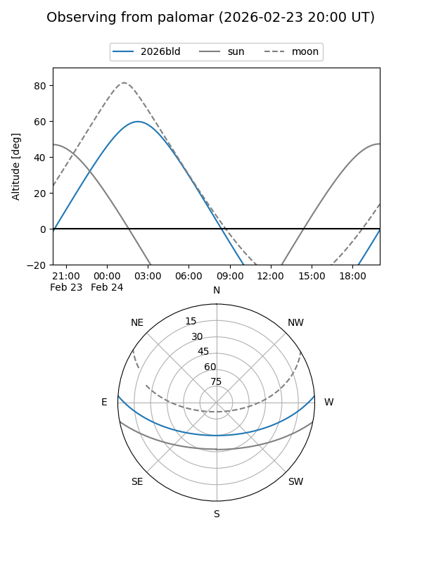
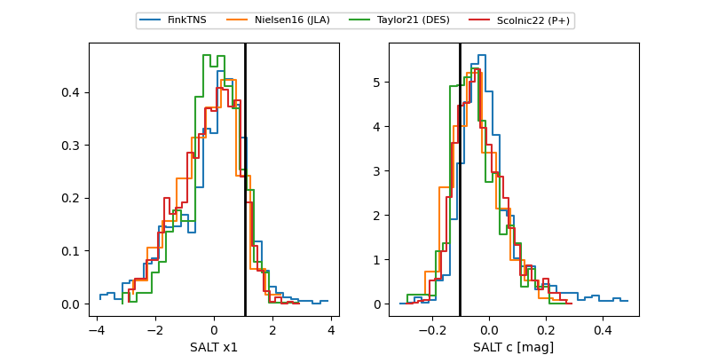

2026bld
Target 2026bld at 2026-02-24 09:08
Aliases and brokers:
FINK: link
Lasair: link
ALeRCE: link
TNS: link
YSE: link
alt names
ZTF26aaejkev (ztf,fink_ztf)
2026bld (tns,yse)
ATLAS26bke (atlas)
Coordinates:
equatorial (ra, dec) = 70.7519,+3.16527
equatorial (HMS+DMS) = 04:43:00.45,+03:09:54.96
galactic (l, b) = (193.9371,-26.56026)
Flags:
Photometry:
last atlasc=18.31, atlaso=18.20, ztfg=18.85, ztfr=18.50
3 atlasc, 3 atlaso, 5 ztfg, 8 ztfr detections
Lightcurve

Visibility


Additional plots
